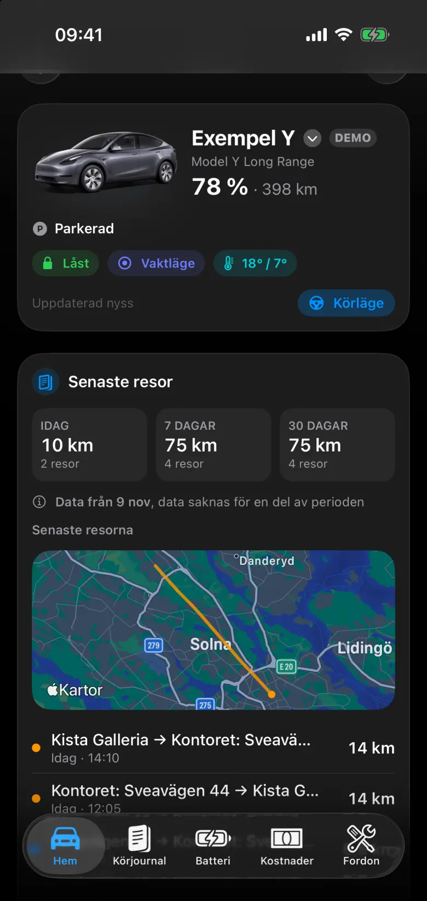

Hem
Hemsidan visar bilen som den är just nu: laddning, räckvidd, lås, vaktläge och klimat. Under det ligger de senaste resorna, med en karta över den senaste sträckan.
Allt på bilderna kommer från appens demoläge. Bilen, platserna och siffrorna är påhittade exempel, inte en riktig bil.